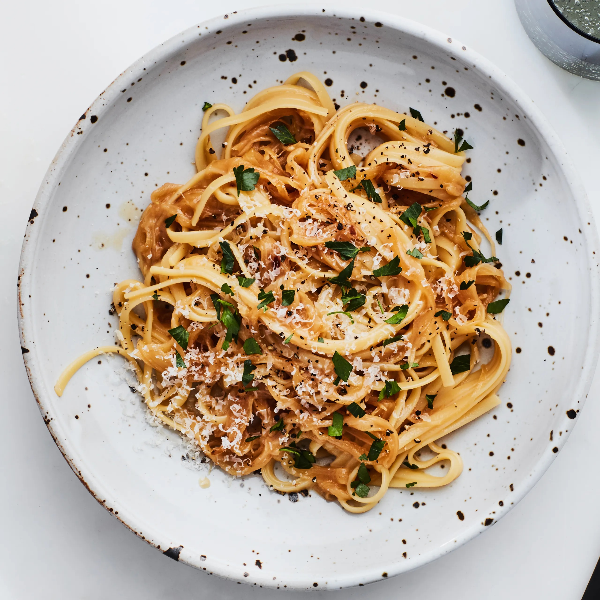
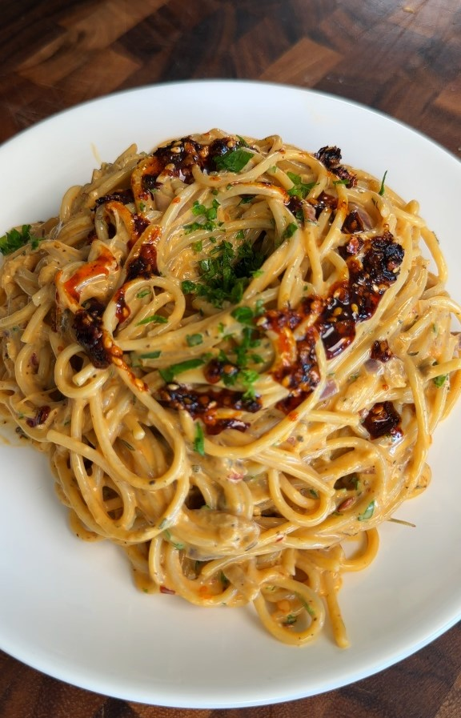
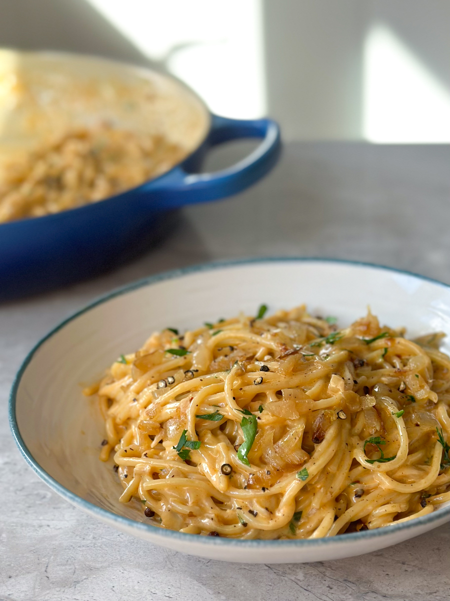

Indulge in the rich, savory flavors of our caramelized onion pasta—a simple yet elegant dish that transforms sweet, slow-cooked onions into a luscious sauce. The deep caramel notes perfectly complement al dente pasta, creating a comforting meal that’s both hearty and refined. Whether you’re looking for a quick weeknight dinner or an impressive dish to serve guests, this recipe brings warmth and depth to every bite. Pair it with a sprinkle of fresh herbs and grated cheese for an irresistible finish!


Prep time: 10 minutes Cook time: 40 minutes Serving: 4 servings
INGREDIENTS
- 4 tbsp oil
- 2 tbsp butter
- 2 onions
- 2 tbsp chili oil
- 500ml heavy cream
- 4 tbsp fresh parsley
- 1 tbsp garlic powder
- Salt & pepper to taste
INSTRUCTIONS
- First, on low-medium heat add the oil & butter. Once heated up caramelize the onions for at least 20 minutes. (Once the onions have started to get color & caramelize turn it on low & stir often)
- Add the chili oil & mix well. Add in the heavy cream & spices. Let this simmer together for about 5 minutes before adding in the pasta.
- Add the pasta, let the pasta & sauce simmer together for a couple more minutes so they can combine well.
- Finally, turn the heat off, add fresh parsley, serve & enjoy!